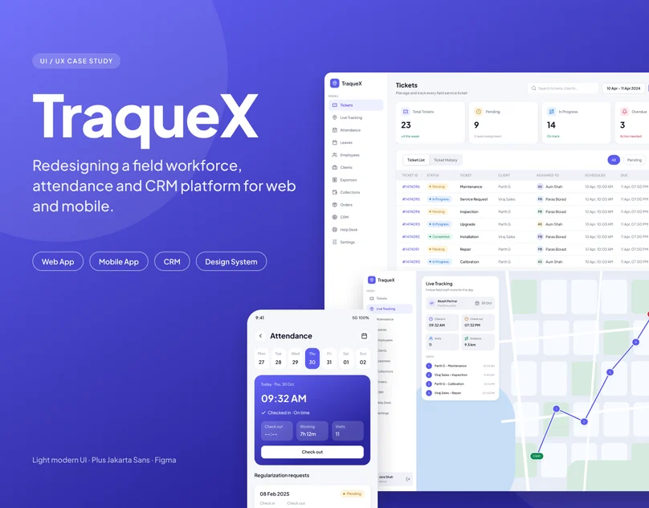

UX case study · Web and mobile
TraqueX — Field Workforce, Attendance & CRM Platform
Redesigning a field workforce, attendance and CRM platform for web and mobile: a calmer interface, one design system and status you can read at a glance.

Overview
One platform for every field team
TraqueX helps companies track field staff in real time, manage attendance and leaves, assign tickets, collect payments and run their CRM. The redesign covers the web admin, the Android and iOS app and the CRM module, with an audit, information architecture, a design system and high-fidelity UI.
The challenge
Powerful features, hard to scan
The product had everything teams needed, but the interface made it hard to use. A saturated purple sidebar and header competed with the data, 23-row tables with tiny text were hard to read and act on, and buttons, inputs and status chips changed style from screen to screen.
Approach · Four principles guided every screen
1 · Clarity first
Quiet surfaces and generous spacing so data and actions stand out.
2 · One system
A single set of components, colours and type reused everywhere.
3 · Status at a glance
Colour-coded badges and stat cards replace long scanning.
4 · Built for the field
Web admin and mobile app share the same language, so teams learn it once.
Before & after
Login: from stock illustration to a confident first impression
Live tracking: context beside the map, not just icons
Web admin
Tables, dashboards and details that read at a glance
CRM module
Leads, pipeline and customer accounts in the same language
Mobile app
Designed for people on the move
Design system
One system, applied everywhere
Plus Jakarta Sans, a calm indigo accent, and reusable components (buttons, inputs, status chips, stat cards, tables and modals) that keep every screen consistent.
Outcome
TraqueX redesign: web admin, mobile app and CRM, delivered as 59 web screens, 26 mobile screens and one design system.
Explore more
Open the Figma file to see every screen, the mobile flows and the design system.